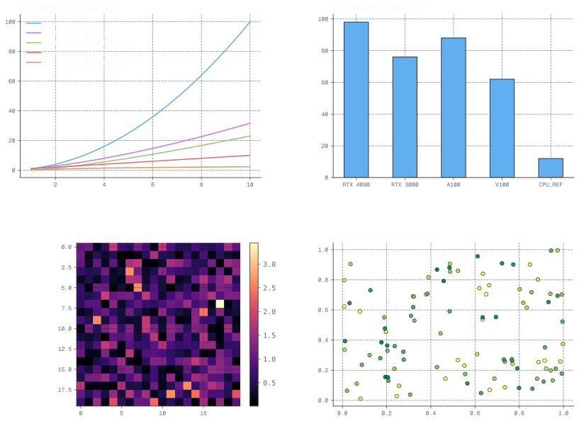

01_ABSTRACT
This project implements a high-performance gravitational solver using CUDA. The primary challenge is the $O(N^2)$ complexity of particle interactions.
02_MATHEMATICAL_MODEL
The acceleration $\vec{a}_i$ for a particle $i$ is defined by the summation of forces from all other particles $j$:
$$\vec{a}_i = G \sum_{j=1, j \neq i}^{N} \frac{m_j (\vec{r}_j - \vec{r}_i)}{|\vec{r}_j - \vec{r}_i|^3}$$
03_OPTIMIZATION_LOG
// CUDA Shared Memory Tiling Example
__shared__ float3 shPos[TILE_SIZE];
for (int tile = 0; tile < gridDim.x; tile++) {
shPos[threadIdx.x] = devicePos[tile * TILE_SIZE + threadIdx.x];
__syncthreads();
// Compute interactions using shared memory...
}